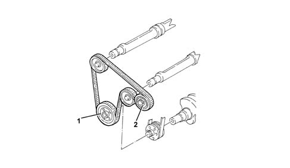

1092E COUNTER-ROTATING SHAFT DRIVE
- Path
- Descriptions > 10 ENGINE UNIT > 1092 VARIOUS ENGINE COMPONENT CONTROLS > 1092E COUNTER-ROTATING SHAFT DRIVE
- Kind
- system description
- Applies to
- engines: 2.0 JTS; all production periods
- Interactive page
- https://sloeber94.github.io/elrnDB-aGt/en/#/125000316
Applies to: engines: 2.0 JTS; all production periods
CONSTRUCTION FEATURES
The counter-balance shaft drive belt is the double-toothed type, driven by the drive pulley (1) fitted on the crankshaft.
The tension is set using the tensioner (2).
